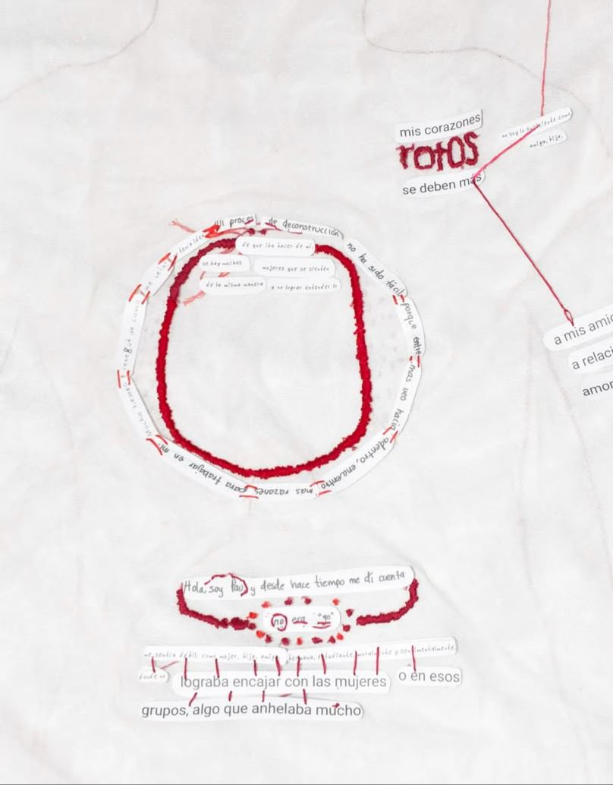
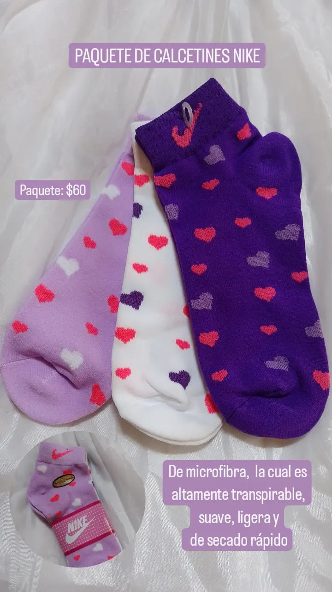
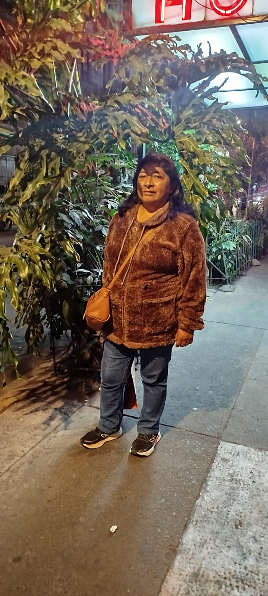
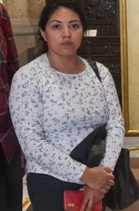

La frase que detona esta obra es: “Uno de los mayores logros de la educación en los últimos años fue llenar las universidades de hijos de obreros”. Si bien existen las universidades públicas, también nos encontramos dentro de una realidad histórica en la que se ha limitado el acceso a la educación a ciertos grupos de personas. A partir de aquí nacen cuestionamientos sobre cuántos de nosotros somos hijos de obreros en las universidades, buscamos encontrarnos a nosotros mismos como el producto de los modelos sociales y reflexionar sobre lo que implica que estemos aquí. Esto, mediante la recaudación de los datos de los alumnos sobre cómo se financian nuestras necesidades educativas y personales para poder estudiar en esta universidad.
Así, intentamos destacar esta nueva realidad de movilidad y apoyo económico en la que convergen distintas generaciones. El proyecto es una página web, donde se podrá hacer clic en diferentes nodos, lo que abrirá un archivo multimedia en el que podremos escuchar entrevistas, consultar las estadísticas recaudadas o reproducir audios grabados sobre los oficios de las personas que apoyan económicamente a los alumnos.